Foggy Swamp
Hunting groundT2Lv 6-10
Creatures
EXP and gold for defeating one creature. The EXP you actually receive also depends on your level and your bonuses; the creature's card in the game shows your own amount.
| Creature | Level | Base EXP | Gold reward | Drops |
|---|---|---|---|---|
| Cave Spider | Lv 6 | 1,357 | 90 | 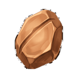 Upgrade Stone T1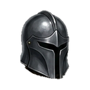 Iron Helmet T2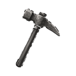 Iron Pickaxe T2 |
| Skeleton Archer | Lv 7 | 2,208 | 147 | Upgrade Stone T1 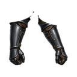 Iron Gloves T2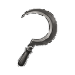 Iron Sickle T2 |
| Deep Zombie | Lv 8 | 3,527 | 234 | Upgrade Stone T1 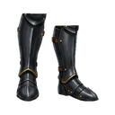 Iron Boots T2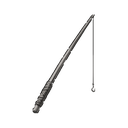 Iron Rod T2 |
| Kobold Miner | Lv 9 | 5,554 | 368 | Upgrade Stone T1 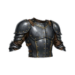 Iron Chest T2 |
| Cave Horror | Lv 10 | 9,761 | 648 | Upgrade Stone T1 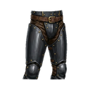 Iron Pants T2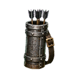 Iron Quiver T2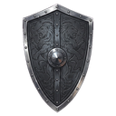 Iron Shield T2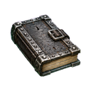 Iron Tome T2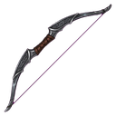 Iron Bow T2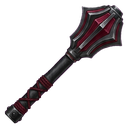 Iron Mace T2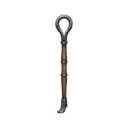 Iron Staff T2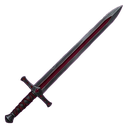 Iron Sword T2 |
Gathering
Gathering gives profession EXP instead of character EXP.